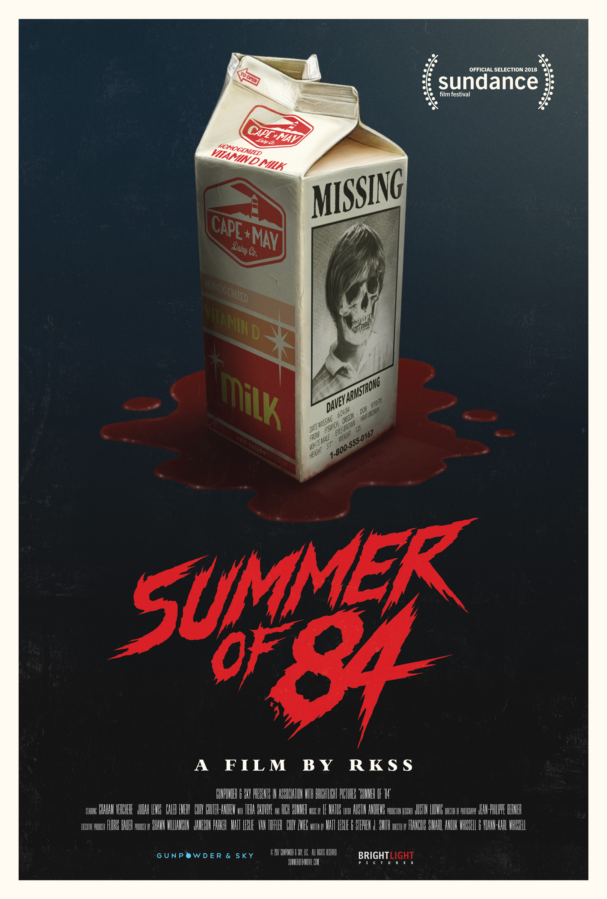
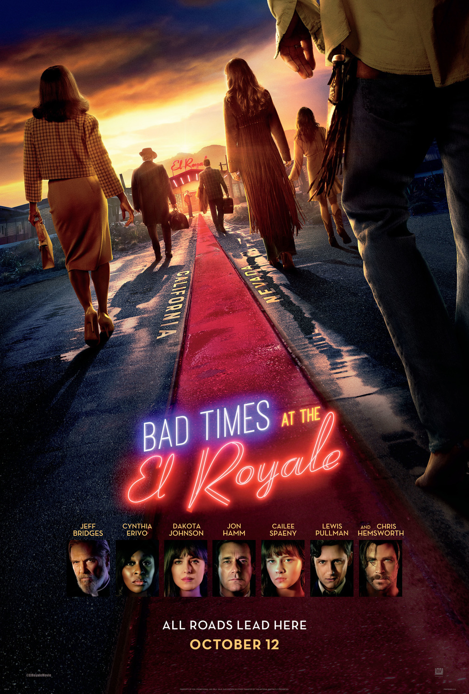
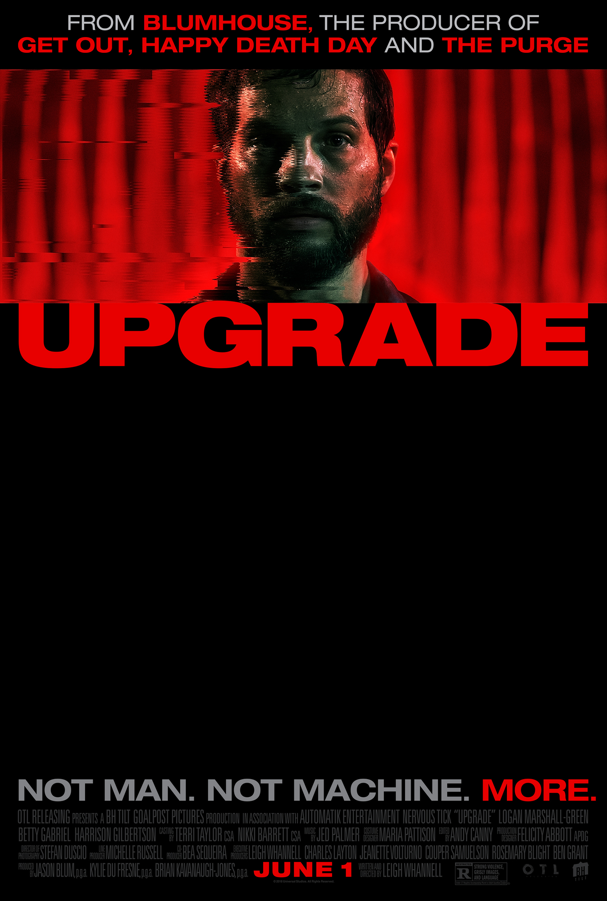

Top 1

Set in a post-apocalyptic world where the sun can instantly torch the skin of any living creature, Finch, a scientist, does whatever he can to supply himself with food and other necessities prioritizing mainly his dog companion. Everything seems to go well for them until a deadly superstorm threatens the well-being of the two, forcing them to leave their bunker. Meanwhile, Finch’s health is slowly deteriorating and creates a robot that can serve as a caretaker and a companion for his beloved dog in case of his absence.
Top 2
Ruby Rossi, 17, who is currently in high school, is the only hearing member of her deaf family. In the mornings, she helps her family’s fishing business, and the rest of the day is dedicated to her study. When she decided to try out for a choir, she soon discovers her prowess and talent in singing. Caught up with choir practice and managing her family’s business, Ruby now must decide to either help his family or continue to pursue her passion.
Top 3
Olive Penderghast, an uncomplicated teenager, is suddenly the talk of her school when someone overhears her saying that she lost her virginity. This was a lie as to make her best friend think that she had an awesome weekend but in reality, was just Olive spending most of her time at home doing nothing. After knowing about the rumor, Olive seems to be worried at first but instead likes it. To keep her scandalous label, she decides to pretend to be who others thought she was.
Top 4
Natalie Bauer, a writer in L.A, makes content about her failed relationships and longs for a partner. It seems that her prayers have been answered when she finally seems to find the perfect match for her in a dating app. Months go by and she finally decides to visit him for Christmas but soon discovers that her perfect partner is not what she expected.
Top 5
Born with a facial deformity, Auggie Newman now must enter 5th grade after being homeschooled for most of his time. Wonder shows us Auggie’s difficult journey to fit in his new environment as well as his family’s problems and hardships that they all struggle with and that there is more to us than what it seems.
Top 6
There have been numerous missing children reports all over teenager Davey Armstrong’s town and he suspects the local sheriff for the disappearances. With the help of his three friends, the ragtag group decides to keep an eye out on the sheriff. Monitoring the culprit’s routines and sneaking into his personal property. As they dig deeper for the truth the more dangerous it gets.
Top 7

Grace has finally decided to have a wedding with her soon to be husband. To finally be considered as a member of the Le Domas family, she must first play a game. As it is family tradition, she has no choice but to accept. What she thought was just a simple game of hide and seek has quickly turned into a hunting ground for her life. In order to stop this, Grace has to survive until sunrise to win the game.
Top 8

What seems to have been labeled as a suicide by Harlan Thrombey has now caught the attention of renowned detective Benoit Blanc, that everything is not what it seems. The detective suspects that it was murder and has now put the whole Thrombey family under suspicion. With the help of Harlan’s caretaker Marta, Detective Blanc and her set of to find clues and evidence to find the truth of what really happened.
Top 9
7 strangers all from different walks of life are staying in a quiet hotel called the El Royale that sits on the border between California and Nevada. Everything seems to be fine until one night where all their paths converge revealing the secrets of the El Royale as well as why the 7 strangers were all actually here for.
Top 10
Grey Trace with his wife went on a night out on the city until they were suddenly mugged. This event left Grey Trace paralyzed and his wife dead. With almost nothing to live for, a billionaire inventor invites Grey to partake on an experiment where an AI implant called STEM is placed inside his body. Miraculously, this allows him to finally walk and soon sets of to find his wife’s murderers alongside the help of STEM.